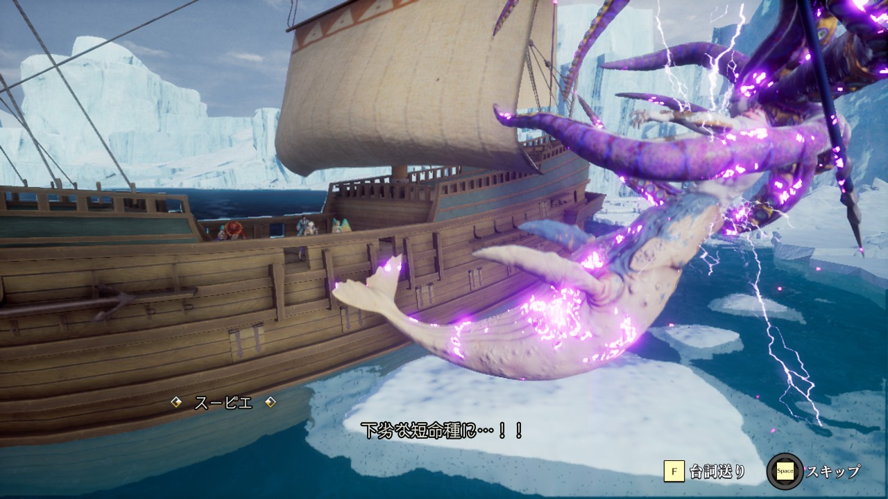

古代人について
古代人について
七英雄やオアイーブ、サグザー、七英雄の記憶に登場した大神官やその他忘れられた町にいた人間はすべて古代人。
数千年前からこの世界に住んでいる（住んでいた）。
同化の法により長命。長命なるが故に死を恐れる。何と同化していたのか不明。古代人同士？短命種？いずれにしても闇が深そう。
一方、短命な人間（古代人は『短命種』と呼んでいる）も存在し、アバロン皇帝を筆頭とする主人公やその他登場人物は短命種の生き残り。
スービエは撃破後に「下劣な短命種に・・・！！」と言っている。（全員とは言えないが）古代人は短命種を見下しているという様子がうかがえる。

かつて、古代人は短命種を召し使っていた。短命種の文明はその時に古代人から受け継がれたもの。
かつて、この世界には天変地異（※）が起きようとしていた。
このため、次元転移装置を開発し、別次元に転移することでこの天変地異から逃れようとしている。
※この『天変地異』という単語は表記ゆれが多い。沈んだ塔の水龍は『変動』と言い、七英雄の記憶1でサグザーは『大災厄』、七英雄の記憶7で大神官は『天変地異』と言っている
同化の法を進化させたのが吸収の法、同化の法の短命種調整版が伝承法。
七英雄は吸収の法でモンスターを吸収することで強くなり、クィーンを討伐。タームから民を守った。
七英雄の記憶にも合った通り、吸収の法はその意識もモンスターに蝕まれるという副作用がある。ゲーム中の七英雄はその成れの果て。
天変地異が起こった後の世界がゲームの世界。一部の古代人は、忘れられた町等、この世界に残っている（サグザーとオアイーブも含む）。
古代人が関係している場所では『古代遺跡』というBGMが流れる（以下動画参照）。
具体的な場所は以下。
- テレルテバの塔
- エイルネップの塔
- 浮上島
- 忘れられた町
- 雪の遺跡
- 砂の遺跡
- 氷の遺跡
あとは？
浮上島には本棚や食器棚のようなものなどが多く残っている。恐らく、数千年前に古代人が生活していた名残だろう。
画像欲しい
雪の遺跡には『飼育錬』などのような場所があり、壊された檻や竜が多く生息している。おそらく古代人がここで飼っていたのだろうと考えられる。
画像欲しい
| 七英雄 | 吸収したモンスター |
|---|---|
| クジンシー | 悪魔系、骸骨系、ゾンビ系 |
| ボクオーン | 植物系 |
| ダンターグ | 獣系 |
| ロックブーケ | 霊体系 |
| ノエル | 竜系 |
| ワグナス | 精霊系、有翼系 |
| スービエ | 水棲系、魚系 |